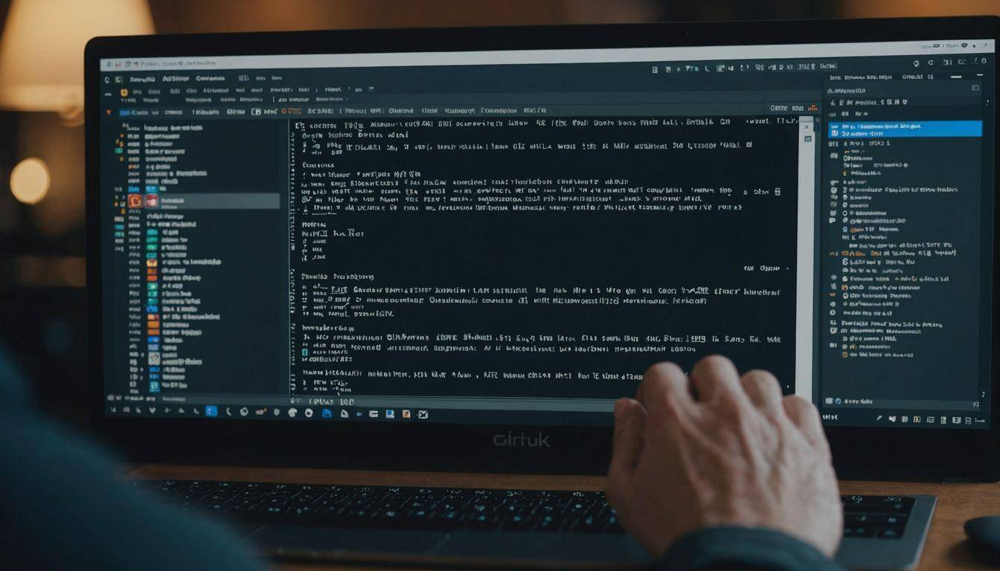
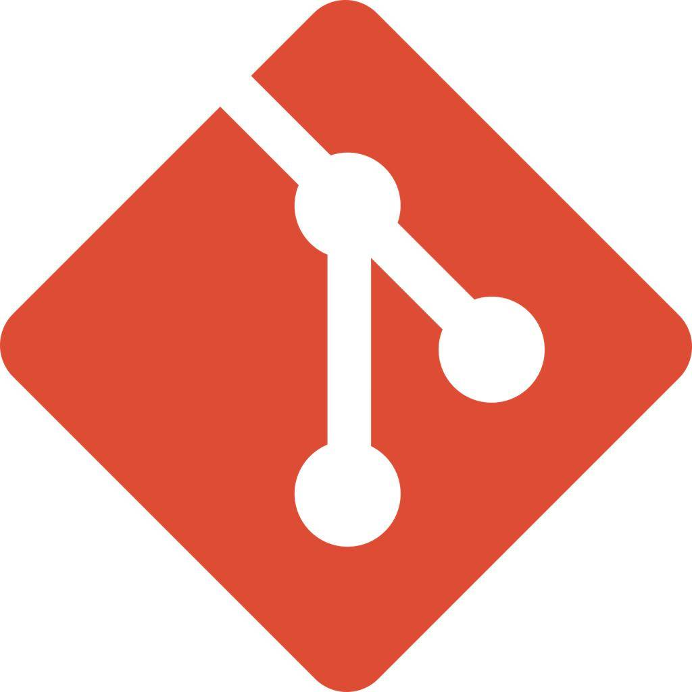
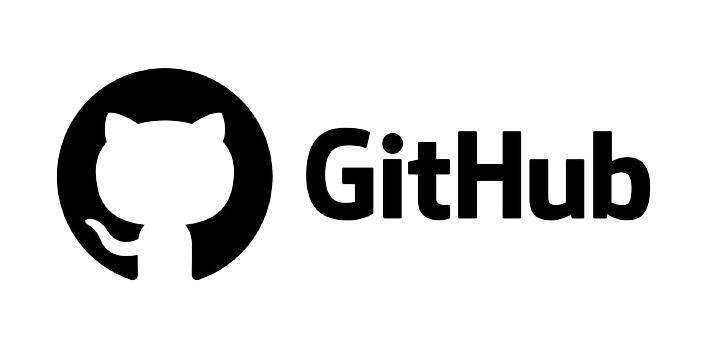

اگر وارد دنیای برنامهنویسی شوید، خیلی زود با دو نام Git و GitHub روبهرو خواهید شد. تقریباً تمام شرکتهای نرمافزاری و تیمهای توسعه از این دو ابزار برای مدیریت پروژههای خود استفاده میکنند. بسیاری از برنامهنویسان مبتدی تصور میکنند Git و GitHub یک چیز هستند، اما در واقع این دو ابزار وظایف متفاوتی دارند و در کنار یکدیگر فرآیند توسعه نرمافزار را سادهتر میکنند.
Git یک سیستم کنترل نسخه (Version Control System) است که برای ثبت و مدیریت تغییرات فایلها، بهویژه پروژههای برنامهنویسی، استفاده میشود.

به کمک Git می توان:
به بیان ساده، Git مانند یک دفترچه ثبت تغییرات برای پروژه است که تمام نسخههای قبلی را نگه میدارد.
GitHub یک سرویس آنلاین برای میزبانی پروژههای Git است.
GitHub یک سرویس آنلاین برای میزبانی پروژههای Git است.
امروزه داشتن یک حساب GitHub برای بسیاری از برنامهنویسان به اندازه داشتن رزومه اهمیت دارد.

گاهی این دو با هم اشتباه گرفته میشوند، اما تفاوت آنها ساده است:
| Git | GitHub |
|---|---|
| نرم افزار مدیریت نسخه | سرویس میزبانی پروژه |
| روی کامپیوتر نصب می شود | روی اینترنت قرار دارد |
| بدون اینترنت هم کار میکند | برای اشتراکگذاری نیاز به اینترنت دارد |
| مدیریت تغییرات فایل ها/td> | نگهداری و همکاری روی پروژه ها |
اگر هنگام برنامهنویسی اشتباهی رخ دهد، با Git میتوان به نسخههای قبلی پروژه بازگشت و تغییرات را بازیابی کرد.
در پروژههای بزرگ معمولاً چندین برنامهنویس همزمان روی یک پروژه کار میکنند. Git امکان مدیریت این تغییرات را فراهم میکند و از ایجاد تداخل جلوگیری میکند.
ذخیره پروژه روی GitHub باعث میشود حتی اگر اطلاعات سیستم از بین برود، نسخهای از پروژه در فضای ابری وجود داشته باشد.
بسیاری از شرکتهای نرمافزاری هنگام استخدام، حساب GitHub متقاضی را بررسی میکنند. داشتن پروژههای واقعی در GitHub میتواند تواناییهای فنی فرد را نشان دهد.
چند دستور که هر برنامهنویس باید با آنها آشنا باشد:
| ایجاد یک مخزن (Repository) جدید. | git init |
| نمایش وضعیت فایلهای پروژه. | git status |
| اضافه کردن فایلها برای ثبت. | git add |
| ثبت تغییرات همراه با توضیح. | git commit -m "First Commit" |
| ارسال پروژه به GitHub. | git push |
| دریافت آخرین تغییرات از GitHub | git pull |
اگر در یکی از حوزههای زیر فعالیت میکنید، یادگیری Git ضروری است:
Git و GitHub از مهمترین ابزارهای توسعه نرمافزار هستند که به برنامهنویسان کمک میکنند پروژههای خود را مدیریت، ذخیره و به اشتراک بگذارند. یادگیری این ابزارها نهتنها کار تیمی را آسانتر میکند، بلکه باعث میشود رزومه حرفهایتری داشته باشید و شانس بیشتری برای ورود به بازار کار پیدا کنید. به همین دلیل، تسلط بر Git و GitHub یکی از مهارتهای ضروری برای هر دانشجوی مهندسی کامپیوتر و برنامهنویس محسوب میشود.